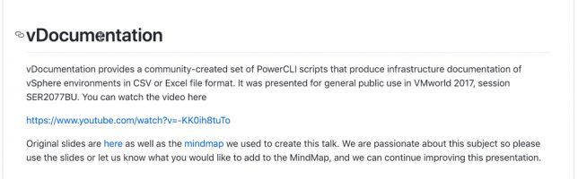
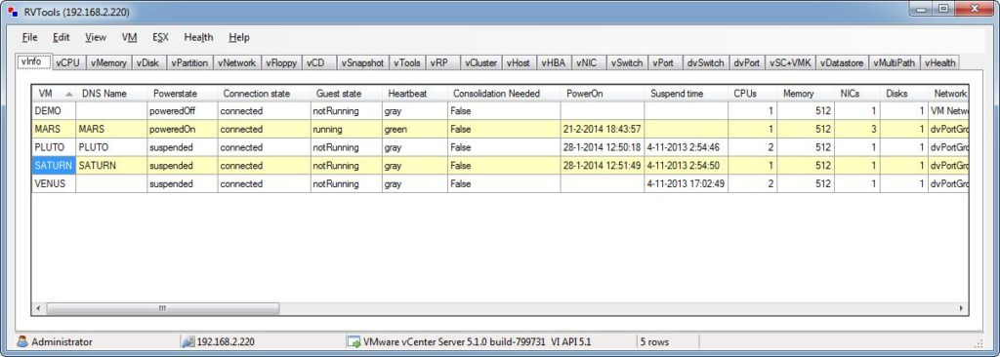
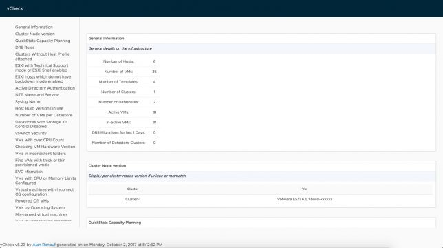
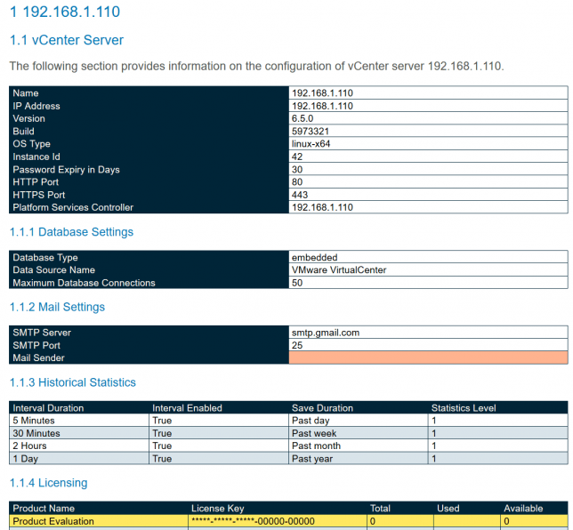

Como fazer inventário e documentação de ambientes VMware vSphere
#vCommunity Blog Tools VMwareCompartilhe esse post nas redes sociais...
Olá Homelabers,
Update: 12/02 - Adicionado o conjunto de scripts As Built Report (@AsBuiltReport) by Tim Carman (@tpcarman) - dica do @arielsanchezmor
Update: 29/10 - Adicionado novos links do As Built Report
Quem nunca assumiu um ambiente que não estava bem documentado e precisou fazer um levantamento completo de todos os componentes desse ambiente desconhecido? Ou mesmo descuidou um pouco da documentação do seu ambiente e agora precisa atualizar?
Hoje, vou mostrar algumas ferramentas e scripts free, criados pela comunidade para que você possa fazer o inventário e documentação de qualquer ambiente VMware.
vDocumentation - @arielzanchezmor & @edmsanchez13
https://github.com/arielsanchezmora/vDocumentation
Esse set de scripts em Powershell + PowerCLI foram criados pelo Ariel Sanchez e Edgar Sanchez, que produz uma série de informações em formato csv ou excel, da sua infraestrutura vSphere para que você possa conhecer e documentar o seu ambiente.

Informações que podem ser obtidas com os scripts:
Para maiores informações sobre como utilizar os scripts, acesse https://github.com/arielsanchezmora/vDocumentation e leia a documentação.
RVTools - @rvtools
Eu já falei do RVTools algumas vezes aqui no blog e reforço que o RVTools é uma ferramenta obrigatória para todo administrador de ambiente vSphere.

Com o RVTools - uma pequena aplicação para windows - você tem facilmente acesso todas as informações do seu ambiente vSphere. Você pode conectar em um host ESXi ou ao seu vCenter.
A ferramenta mostra informações de VMs, Memória, Disco, Snapshots, Datastores, VMware Tools e muito muito mais.
O RVTools é free e para usar, basta fazer o download no link abaixo e instalar no seu sistema. Mais informações sobre o RVTools aqui
RVTools Download | RVTools Documentação
vCheck Daily Report for vSphere - @alanrenouf
https://github.com/alanrenouf/vCheck-vSphere
O vCheck Daily Report é mais um conjunto de scripts Powershell + PowerCLI criados inicialmente pelo Alan Renouf e mantido pela comunidade.

A idéia por trás do vCheck Daily Report (vCDR) é que você deixe esses scripts executando diariamente no seu ambiente e receba um e-mail pela manhã (ou quando for mais conveniente para você) com um status do seu ambiente formatado bonitinho e que você pode até encaminhar para o chefe :)
Mas nada impede, de usar esses scripts para gerar uma documentação/inventário inicial do seu ambiente e você pode customizar exatamente quais informações receber/extrair.
Dentre várias informações trazidas pelo script, destaco:
* Number of Active VMs
* Number of Inactive VMs
* Number of DRS Migrations for the last days
* Snapshots over x Days old
* Datastores with less than x% free space
* VMs created over the last x days
* VMs removed over the last x days
* VMs with No Tools
A documentação do vCheck Daily Report é bastante completa e detalhada.
Para maiores informações sobre como utilizar os scripts, acesse https://github.com/alanrenouf/vCheck-vSphere e leia a documentação.
VMware vSphere As Built Report - @tpcarman @AsBuiltReport
Update - O As Built Report agora tem um site e um novo repositório no Github
https://github.com/AsBuiltReport
O As Built Report (@AsBuiltReport) foi criado Tim Carman (@tpcarman) e é um conjunto de scripts em PowerShell e PScribo para gerar e construir documentação nos formatos HTML, XML, Texto e MS Word.
O conjunto de scripts gera um relatório bastante completo do seu ambiente vSphere com informações de Host, vCenter, Clusters, VMs, Datastore, Rede, Licenciamento, vSAN, NSX, etc.

O As Built Report tem o seu código aberto e publicado no Github, ou seja, você pode customizá-lo para atender suas necessidades.
Para maiores informações sobre como utilizar o As Built Report, consulte a documentação no site do autor ou no GitHub. BONUS: Vídeo no Youtube da apresentação do Tim na VMworld 2018
* [https://github.com/tpcarman/As-Built-Report/tree/master/Reports/vSphere](https://github.com/tpcarman/As-Built-Report/tree/master/Reports/vSphere)
* [https://www.timcarman.net/2018/08/20/documenting-your-datacentre-infrastructure-with-powershell/](https://www.timcarman.net/2018/08/20/documenting-your-datacentre-infrastructure-with-powershell/)
* [https://www.youtube.com/watch?v=aQqHSEIUHl8&feature=youtu.be&t=1988](https://www.youtube.com/watch?v=aQqHSEIUHl8&feature=youtu.be&t=1988)
Mas qual é o melhor?
Não existe uma ferramenta melhor ou pior, tudo vai depender das suas necessidades e quais informações você precisa, mas certamente, ter esses scripts no seu vBat-Cinto-De-Utilidades vai te ajudar bastante, seja no seu ambiente do dia a dia ou seja para fazer um levantamento em um novo ambiente.
Conhece outra ferramenta ou scripts? Deixe nos comentários para que eu possa atualizar o post!
Até a próxima!
Compartilhe esse post nas redes sociais...Valdecir Carvalho
Nerd e pai orgulhoso da Mariana e João. Profissional Sênior de TI com foco em arquitetura de infraestrutura e cloud computing. Blogueiro, podcaster, palestrante, amante de comunidades técnicas, fotógrafo aposentado e adora jogos antigos.
#vExpert · #VMUGLeader · #VUGBrasil · #vBronwBagBrasil · #VeeamVanguard